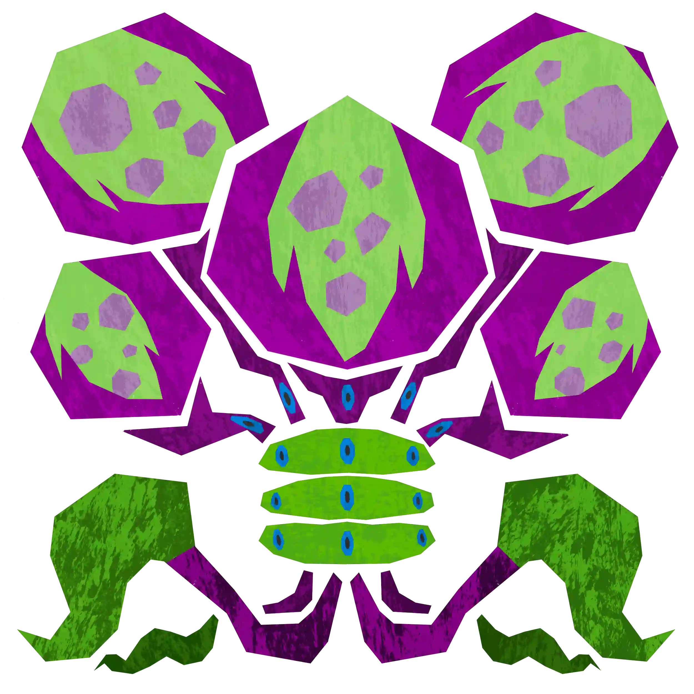

Camuflada entre la bruma y el fango de los pantanos de Karteos, la Brassela es una criatura cuya existencia evolutiva se basa casi exclusivamente en la preservación de su especie.

Sus ágiles tentáculos le otorgan una flexibilidad y movilidad impresionantes, otorgándole la capacidad de desplazarse silenciosamente sin alertar a ningún otro ser vivo de su presencia.
Posee una anatomía única, con decenas de ojos compuestos distribuidos a lo largo de su cuerpo. Esta gran red ocular le proporciona un campo visual en todas direcciones, y prácticamente no posee ningún punto ciego, manteniéndola alerta ante cualquier peligro. Aunque carece de mecanismos defensivos letales y prefiere camuflarse en el ecosistema, su instinto la vuelve muy agresiva si es acorralada.

Su reproducción es exclusivamente asexual. Sus largos brazos culminan en bulbos translúcidos llenos de un fluido amniótico; allí la Brassela gesta y transporta consigo clones genéticamente idénticos. Su prioridad biológica es proteger sus crías a toda costa, mostrando un gran comportamiento maternal que la impulsa a sacrificar su propia vida antes que permitir el daño de sus embriones. Al alcanzar el tamaño adecuado, los bulbos simplemente se desprenden para iniciar su nueva vida, y la Brassela original marchita y muere.
En cuanto a su nutrición, actúa como una especie carroñera fundamental para el reciclaje del ecosistema karteosiano. Utilizando su tentáculo inferior, que finaliza en una potente ventosa quimiorreceptora, la criatura hurga en las profundidades del fango buscando cadáveres y materia orgánica en descomposición de los cuales poder alimentarse, asegurando así la energía necesaria para mantener con vida sus sacos bulbosos.